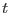

XMM-Newton Science Analysis System
attfilter (attfilter-1.3.3) [xmmsas_20170112_1337-16.0.0]
Description
attfilter
performs exposure-specific attitude data filtering and
Good-Time-Interval (GTI) creation driven by a single boolean selection
expression. The task generates a single GTI table whose rows represent
time intervals during which the spacecraft attitude did not deviate
from a given reference attitude by more than a specified tolerance limit.
Thus, filtering an event list with this GTI table will eliminate all
events that have been detected during times of unfavorable attitude, e.g.,
short pointing excursions due to loss of guide star(s) by the
star tracker system. Although the aspect correction tasks in the SAS,
viz. attcalc
(EPIC), rgsangles
(RGS), and omatt
(OM)
can correctly treat even large attitude variations![[*]](../icons/footnote.png) attitude GTI filtering is deemed crucial in order
to avoid the generation of unnecessarily large sky images and exposure
maps and to reduce variability due to sources moving across the face
of the detector (e.g. crossing chip gaps, changing vignetting).
In the case of RGS this processing step is especially important
since the scientific quality of the calibrated event lists and high level
products is directly correlated with the stability of the spacecraft
during the exposure.
attitude GTI filtering is deemed crucial in order
to avoid the generation of unnecessarily large sky images and exposure
maps and to reduce variability due to sources moving across the face
of the detector (e.g. crossing chip gaps, changing vignetting).
In the case of RGS this processing step is especially important
since the scientific quality of the calibrated event lists and high level
products is directly correlated with the stability of the spacecraft
during the exposure.
Starting from an attitude data time series as created
by atthkgen
and a given exposure in the current ODF (pointed
at by the environment variable SAS_ODF) attfilter
carries out the following operations in sequential order:
- Inquire the start and end time of the exposure specified
via the parameter instexpid
- Disregard the attitude data (specified via parameter attset)
which lie outside the exposure time window
- Compute the median spacecraft attitude within the exposure
time window. In default of a mathematically rigorous definition of
this quantity the median attitude is calculated as the composition
of the individual medians of:
- Right Ascension (J2000) of star tracker viewing direction
- Declination (J2000) of star tracker viewing direction
- Astronomical position angle of spacecraft
- Generate a GTI table with the task tabgtigen
under the control
of a filtering expression which involves the previously computed median
spacecraft attitude values and a user-specified set of tolerance angles
(see parameter tolangles)
.
There are two ways to choose the filtering expression: The user can
either give the full expression himself via the parameter
expression in conjunction with setting filtertype=user
or choose one of two predefined filters (in the following
designates the median and the actual spacecraft
pointing direction at time  expressed as unit vectors in the
earth-centered J2000 sky reference system):
- cone (filtertype=cone):
This equation describes a cone with symmetry axis and
half-opening angle .
- pyramid (filtertype=pyramid):
where stands for the direction cosine matrix corresponding
to the previously computed median spacecraft attitude and
and designate the  and
and  components of a vector
components of a vector  .
The combination of the two equations describes a pyramid with a rectangular
base subtending the two half-opening angles and .
This base rectangle is aligned with the spacecraft and axes
which in turn are aligned with the RGS cross-dispersion and dispersion
direction respectively.
.
The combination of the two equations describes a pyramid with a rectangular
base subtending the two half-opening angles and .
This base rectangle is aligned with the spacecraft and axes
which in turn are aligned with the RGS cross-dispersion and dispersion
direction respectively.
- Add the median spacecraft attitude values to the new GTI table
as attributes MEDI_RA, MEDI_DEC, and MEDI_APA.
The task's main output is a new GTI table in a new or previously
existing data set suitable for direct event list filtering.
XMM-Newton SOC/SSC -- 2017-01-12